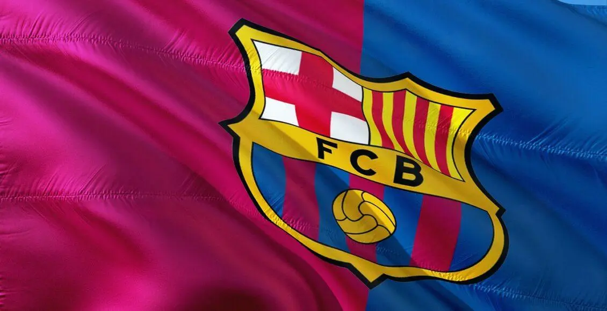

História do Barcelona: o clube que revolucionou o futebol
No ano em que completa 121 anos, a equipe catalã tem uma história memorável. O FC Barcelona percorreu um longo caminho desde a sua fundação em 1899

Barcelona completa em novembro 121 anos de históriaNo dia 29 de novembro de 2020, o Futebol Clube Barcelona completa 121 anos, repletas de acontecimentos marcantes, craques, futebol ofensivo e inovador. Aqueles que acompanham e admiram o ‘Barça’ se emocionam por tudo que o clube viveu. Então, acompanhe a seguir a história do Barcelona e os momentos mais marcantes de sua trajetória.
++ assista a final entre Barcelona e Real Madrid em 2025
Joan Gamper, o fundador do Barcelona
Nascido Hans Kamper em 1877 em Winterthur, Suíça, ele levou uma vida cheia de realizações, incluindo a fundação de dois dos maiores clubes de sua terra natal, a Suíça – FC Basel e FC Zurich, e se tornou o capitão do RotBlau antes de completar 20 anos. Numa época em que todo o esporte era praticado por amadores e ganhava dinheiro com o que era para todos os efeitos, uma atividade de lazer estava fora de questão, Hans Kamper partiu para a África, como tantos europeus de seu tempo, para viver do comércio de açúcar o negócio.
Ele fez um desvio em Barcelona para conhecer seu tio, mas se apaixonou pela cidade e nunca chegou à África. Seu amor pela Catalunha o levou a aprender catalão antes de aprender espanhol e depois mudou seu nome para um som mais catalão, Joan Gamper.
Início do Barça
No dia 29 de novembro de 1899, Gamper e mais 11 jovens fundaram o FC Barcelona. O intuito do clube era ser democrático e socialmente inclusivo, isto é, as pessoas podiam propor ideias e participar do crescimento do time.
Talvez, como homenagem ao vermelho e azul do FC Basel, o clube da cidade natal de Gamper, tenha sido escolhido como as cores oficiais do novo clube catalão

Jogadores do Barcelona enfileirados pré jogo/ Divulgação Barcelona
Dentro de uma década após a fundação, as coisas ficaram difíceis para o clube; com as finanças em uma bagunça, havia uma grande probabilidade de o clube desistir de sua infância. As atuações da equipe em campo também sofreram e passaram quatro anos sem troféu. Era demais para Gamper suportar e ele não podia ver seu sonho se desenrolar diante de si. Tomando o assunto em suas mãos, ele se tornou presidente do clube pela primeira vez em 1908, aos 31 anos de idade, e ocupou a presidência por cinco mandatos durante os próximos 15 anos. Com Gamper no comando, o sucesso logo se seguiu e o clube deu passos rápidos dentro e fora do campo.
Primeiros ídolos da história do Barcelona
O olhar atento de Gamper o viu assinar com o prodígio Paulino Alcántara, de 15 anos, o homem que se tornou o maior goleador de todos os tempos do Barcelona até Messi fazer o seu próprio recorde . Em 1917, ele contratou o inglês Jack Greenwell como técnico e, junto com Alcántara, contrataram jogadores do calibre de Ricardo Zamora, Josep Samitier, Félix Sesúmaga e Franz Platko, que se tornaram lendas do clube. Durante esse período, o Barcelona ganhou onze Campeões da Catalunha , seis troféus da Copa del Rey e quatro Coupe de Pyrenées, desfrutando assim de sua primeira era de ouro. Com sucesso, aumentou o número de associados e as receitas e, como resultado, em 1922, o clube mudou-se para Les Corts , o estádio que o clube chamou de lar pelos próximos 35 anos.
No ano seguinte foi criada a La Liga, na época os clubes não davam prioridade para a competição, pois acreditavam que a Copa da Catalunha era mais importante. Entretanto com 25 pontos, dois a mais que o Real Madrid, o Barcelona conquistou o primeiro campeonato. Com a conquista a equipe catalã fechou a década de 1920 – 1930 com 14 títulos, (uma La Liga, oito campeonatos da Catalunha e cinco copas do Rei).

Estádio Les Corts, casa do Barcelona até a criação do Camp Nou
Guerra civil espanhola e o adeus a Gamper
Juntamente com a ascensão e o sucesso desse símbolo catalão, o cenário político estava mudando bastante na Espanha.
Durante uma partida em Les Corts em 24 de junho de 1925, os torcedores catalães, em uma demonstração de desafio à ditadura de Primo de Rivera, zombaram do hino nacional espanhol e aplaudiram “God Save the Queen”, interpretado por uma banda britânica da Marinha Real britânica. Não foi nada bom com o ditador eminente que acusou Gamper de promover o nacionalismo catalão e o forçou ao exílio. Para agravar sua miséria, ele ordenou que Les Corts ficasse por seis meses. Como condição para o retorno de Gamper, ele foi forçado a evitar todos os contatos. com o clube.

Este foi o começo de uma espiral descendente para Gamper, a depressão em que ele se encontrava devido a ser forçado a se afastar de seu clube foi agravada pelo colapso econômico global de 1929 que destruiu seus negócios. Isso era demais para ele suportar, um ano depois ele se suicidou. É uma coincidência estranha que o homem que amou tanto o belo jogo tenha morrido no dia da primeira final da Copa do Mundo da FIFA.
Lembrado até os dias de hoje como um ideólogo liberal que defendia a independência catalã, o Barça convida um clube conhecido para um amistoso todo mês de agosto antes do início da Liga e o vencedor recebe o troféu Joan Gamper.
História do Barcelona e seu declínio
Seis anos após a morte de Joan Gamper, o presidente do clube Suñol foi assassinado por militares da Espanha Fascista. A derrota do clube em uma época de pouco futebol e muita guerra foi decretada após o bombardeio aéreo em sua sede oficial.
Como resultado, o Barça não conquistou nenhum título naquela década. Muitos jogadores deixaram o clube e ninguém queria manchar sua imagem por jogar em um clube que era contra as autoridades. A partir da temporada de 1936/37, o campeonato espanhol foi cancelado devido à guerra. Barcelona estava prestes a desaparecer, pois a economia era fatal e eles viviam sob a pressão das tropas de Franco. Até que uma turnê foi organizada na América, foi isso que salvou o clube. Como conseqüência, os blaugranas chegaram a um ponto de desespero que consideravam se estabelecer nos Estados Unidos como uma nova franquia.
O Barcelona precisou de ajuda de políticos mexicanos para se reerguer, além de contar com ídolos antigos para montar uma nova equipe. Duas décadas depois foi construído o Camp Nou, onde até hoje a história do Barcelona é construída.
Embora o Barcelona tenha conquistado a história ao se tornar o primeiro time a derrotar o Real Madrid na Copa da Europa , os anos 60 como um todo foram em grande parte um momento decepcionante para os torcedores do clube. Com Di Stefano no auge, o Real Madrid era um oponente muito forte e o Barcelona teve que se contentar com dois troféus da Copa del Rey pela década.
História do Barcelona e Johan Cruyff
Johan Cruyff é o personagem mais icônico e importante da história de Barcelona. Primeiro como jogador, depois como treinador. Cruyff contribuiu significativamente para o clube catalão para alcançar a grandeza que atualmente possui. De fato, o ano de 1973 marcou o início do sucesso, com a chegada do então atacante da seleção holandesa.
Considerado um homem que se tornou um ícone dentro e fora do campo e que ajudou a instilar a filosofia ensinada aos jovens em La Masía por vários anos, é difícil falar sobre a história do Barcelona sem nomeá-lo. Para ter ideia, o atleta chegou a ser comparado com Pelé.
Antes, o Barça era uma equipe inconsistente. Era importante na Espanha, mas não tinha um domínio hegemônico na Europa. Cruyff protagonizou gols antológicos, como o de voleio em cima do Atlético de Madrid, em que ele magicamente parou a bola no ar.
Sem dúvidas, Johan Cruyff é o ponto de virada na história de Barcelona.
A maior rivalidade – Barcelona x Real Madrid
Quando o atacante alemão Udo Steinberg fez os dois primeiros gols da vitória por 3 x 1 do Barcelona sobre o Real Madrid, em 13 de maio de 1902, no Estádio do Hipódromo, em Madri, ele não sabia o que estava escrevendo no primeiro episódio de uma das maiores rivalidades do futebol mundial.
Barcelona e Real Madrid é considerado um dos maiores clássicos do futebol. Além de ser um clássico muito forte pelo poder do futebol, a briga política entre Catalunha x Madrid (capital da Espanha) deixa mais quente o jogo.
Aliás, a primeira goleada do clássico que se tornaria o maior da Espanha foi o 5 a 0 no Santiago Bernabéu com show de Cruyff. A partir desse momento o Barcelona jamais sairia do hall dos maiores clubes do mundo.
Coletânea de craques na história do Barcelona

Inegavelmente, a partir dos anos 90 o Barcelona passou a conquistar seus principais títulos. Romario, Rivaldo, Ronaldo, Ronaldinho, Belleti, Neymar, Daniel Alves, entre outros craques carregam grandes histórias no clube.
O começo da década marcou o retorno de Cruyff, dessa vez como treinador. O marco dos anos 90 foram as quatro conquistas seguidas da La Liga, de 90 a 94. Desse modo, em 1999 eram comemorados os 100 anos do clube que lutou tanto para ser reconhecido
A era Lionel Messi na história do Barcelona
No século 20, especialmente no final e graças a Cruyff, o Barcelona já era um grande clube. No entanto, a virada para transformar os Blaugranas de um grande clube em um clube vencedor tem nome e sobrenome: Leo Messi.
Contudo, o jovem garoto brilhava nas categorias de base do Barça, e desde então já chamava a atenção da diretoria. Na temporada 2003-2004, quando ainda tinha apenas 16 anos, Messi estreou pela primeira vez em um amistoso com o Porto, que marcou a abertura do novo estádio Do Dragao.
No torneio seguinte, Messi fez sua primeira aparição em uma partida oficial em 16 de outubro de 2004, na vitória do Barcelona contra o Espanyol no Estádio Olímpico (0-1). No entanto, na temporada 2008/09, e agora sem Ronaldinho ao lado dele, Messi se tornou a principal estrela da equipe do Barça.
Desde a estréia de Messi, o Barcelona ganhou 20 grandes troféus, o dobro de Madri, sendo 10 La Liga, 4 Liga dos Campeões e 6 títulos Copa Del Rey. Enquanto o Real Madrid conseguiu vencer 4 vezes a La Liga; 4x Liga dos Campeões e 2x Copa del Rey.
Em resumo, Messi conseguiu conquistar o Barcelona com um total de 34 troféus desde a sua estreia. São 5 a mais que o Bayern e 14 a mais que o Real Madrid que está acompanhando.
Então, veja o gol mais bonito da carreira do atleta: